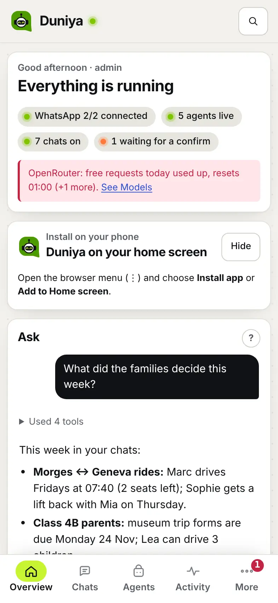
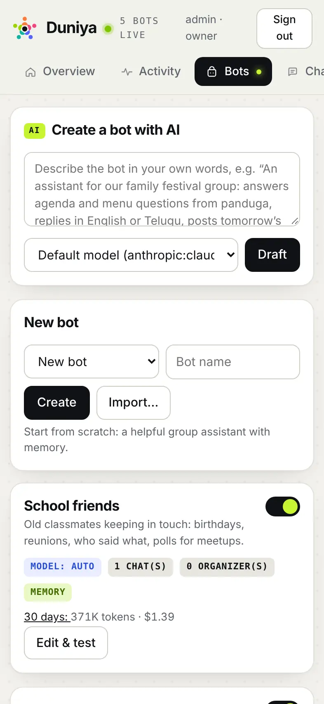

Helpers for your WhatsApp and Telegram groups, on your server.
AI agents for your family, school, car-pool and club chats. You choose the chats, the model and what they may do, from a calm web panel on a free server you own.
Car poolingThu 20 Nov: Luca 07:15 from Morges (full), Mia back from Cornavin at 18:10, 1 seat left.
MiaSophie, see you at 18:10 👍
The panel in 25 secondsDemo data · numbers like +41 79 000 00 01 are fake
Memory~180 MBRAM for the whole app
Server0 €on Oracle or Google free tiers
First answer5 tapsafter the install
DefaultSilentuntil you switch a chat on
Is it for me?
Made for organisers, not for marketing.
A good fit
You run a family, school, club or neighbourhood group and want a helper that answers, reminds and keeps track
You want the chats and the data on a server you own, and to choose the AI model
You can click through a cloud sign-up, or paste one command into a server
Not the right tool
You need the official WhatsApp Business API, a support desk or bulk marketing
You cannot give the agents a spare number (a prepaid SIM is enough)
You want a hosted app with nothing to set up
What it costs
0 €The software: open source, MIT
0 €The server on Oracle or Google free tiers (or a few € a month anywhere)
0 € +Models: OpenRouter's free ones, your ChatGPT or Claude plan, or pay per use with a monthly cap
How it works
Three steps to a helpful group.
No terminal after the install. Getting started on the panel's first screen opens each step right where you are.
Install
One click on the Oracle Cloud or Google Cloud free tier, or one command on any Ubuntu/Debian server. You get an HTTPS address and a setup code.
Link WhatsApp and a model
Scan a QR code with a spare number. Paste any model key, use your ChatGPT or Claude plan, or start free with OpenRouter.
Pick an agent, switch a chat on
Tap a template (Car pooling, Family, School friends…) or describe one. Switch a group on and people write !rides or @mention it.
Features
Everything an organiser needs. Nothing to SSH for.
Agents
Describe it. Review the diff. Switch it on.
Start from a template or a sentence: “a helper for our running club that posts Sunday's run every Saturday”. Every change comes back as a visual diff; each agent has a calm page of short sections. Quick replies, welcomes and FAQ answers need no AI at all.
“What did the families decide this week?”, “send me a dancing GIF”, “post a poll in Carpool: pizza or dosa?”. It sees only chats that are on, never answers in groups, and anything it sends or changes waits for your confirm CODE. Alerts and a weekly summary come from it too.
The same assistant on the panel's first screen: you see it think, each tool it uses in plain words, and the answer as it streams. Stop, copy, follow up; changes wait for Confirm.
Search & review
Find what was said. Teach agents from their real answers.
Press / for any agent, chat or setting, or search the messages of every chat that is on. A chat's Messages show who said what, each answer in its agent's colour; rate it 👍 or 👎 right there, in the agent's Review or in Activity — it's the same rating everywhere. Fix an answer in the chat itself with Edit while WhatsApp allows it, or send a correction. Teach… turns a better answer into a FAQ entry, applied with one tap.
A light model for small talk. Checked figures for everything else.
Choose Auto: light for simple, strong when needed: greetings and short questions go to a cheap or free model, the owner, photos, changes and anything about your records to the strong one — decided by rules in code, a 4-token check only when unsure. Usage shows what it saved, and the cost of every feature — answers, judged group messages, summaries, voice, sending — one line each. Before an answer goes out, its amounts, dates and counts are checked against People, events and orders: a wrong figure is corrected, never sent.
A short brief, next steps to approve, and what you missed.
Each morning your assistant sends what needs you — payments due, questions to you nobody answered, birthdays, stuck sends, new people — and nothing when there is nothing. It suggests the next step (“2 people have not paid — send reminders?”): reply with the code, or tap Review and send on Overview; nothing goes out before. Ask it who came last year but hasn't registered? or tap What did I miss? on a group.
Promises kept, family ties suggested, each person in their language.
Switch on Track promises: “I'll bring the child seat on Friday” is noted, Marc gets one friendly reminder when it is due, and it is marked done when the chat says so. “My daughter Mira” becomes a suggestion in People — you add it or say no. People → Promises shows every agent's promises in one list, overdue first, with the message each came from. Each person's language — Telugu, Hindi, Tamil, Arabic, Chinese and more, or Telugu and Hindi typed in Latin letters — usual hours and app are learned and editable: agents answer in their language, messages to lists arrive in their hours.
A 👎 on an answer, “no, it’s Chary who drives” in the group, or Didn’t need to answer under something it said by itself becomes a short lesson. You approve it with one tap; from then on the most relevant lessons go with every message, and agents that read groups by themselves learn when to stay out.
The panel installs on your home screen and opens full screen like an app: a tab bar at your thumb, compact rows that open into pages (a page per person, too), chats always by their name, Undo when you switch something off, light and dark. Nothing from a store, nothing to keep up to date.

Overview
Chats

Agents
Safety & privacy
Silent by default. Rules in code.
Chats that are off are dropped before storage and before any model
Groups get a short privacy notice once, in your words
Reads and types at a person's pace: blue ticks after a natural pause, a daily limit on new chats
Tools are allowed per role in code; each tool's risk comes from what it declares: an organizer's clear request is the go-ahead for changes, destructive ones wait for a yes, and every change made without asking is in Activity
Per tool service: when to use it, limits per reply and per day, and GIFs shared on their own at the right moments (only mood words are searched, never names)
Web search built in: agents look up current facts with your AI provider's own search (Claude, ChatGPT), on by default, per role
Keys and passwords never pass through a chat: one-time panel links
Every look at stored messages is in the activity log
People
Who is who: families, kids and the people around your agents.
Everyone from your chats that are on, and every contact from your phone, lands in People by itself, one person across WhatsApp and Telegram. Add notes, tags and lists, tie people together (parent of reads child of on the other page) and group them in households — kids without a phone are reached through their adults. Agents know who is writing (a short card, never message text) and see only the people of their own chats, unless you say otherwise; organizers can be people or a list, on every app. Consent per person, Hide instead of delete, merge with 30 days to undo. Ask the owner assistant "who is Ravi's kid?".
Switch on Events and Orders and payments under Settings → Modules. Families register in the group ("!panduga register us for Sankranti"): adults and kids come from the household, a full event fills a waiting list that moves up by itself, and an organizer can confirm each one. The price list turns a registration into an order (kids under an age free); record cash or bank payments, part or full, and ask "who hasn't paid?". Duties, attendance and CSV too. Duniya records payments, it never takes money.
Switch on Lists and sending: send to a list, a tag, an event's families (one message per household) or everyone who still owes. Consent is checked in code before every message, each person gets their own wording with their own facts (never invented), Telegram when they use it, WhatsApp at a person's pace: sending hours, typing, random gaps, a daily limit, slower for people who never wrote. A reply "stop" is respected at once, and the run pauses and tells you. Payment reminders with one tap, or by themselves before the due date. Pacing lowers the risk of a WhatsApp ban; it does not remove it.
Switch on Surveys: a few questions (choices, numbers, short text) that people answer in the chat, one question at a time, or with their own link on a small page of your server. Results with bars, each person's answers, CSV. A campaign sends a few messages over days, confirmed once: follow-ups skip people who replied, registered, paid or answered, with the same consent, pace and stop signals as every send.
Make a bot in @BotFather and paste its token: the same agents, memory, quick replies and polls answer in your Telegram groups. People tap Share my number once, and the same phone on WhatsApp and Telegram is the same person, with the same role. Official, free, a few MB.
About 180 MB of memory. Photos and voice notes queue, heavy extras stay off, old data is pruned every hour, and a dropped connection, a crash or a full disk sort themselves out. Health shows what is kept and since when.
Encrypted backups. Updates that tell you what's new.
Scheduled, encrypted backups to a private GitHub repo or S3. Updates install from the panel after a backup and show every release in between; breaking ones wait for your OK on the panel or WhatsApp. A release that does not start on your server is rolled back by itself.
x86_64 or arm64, 1 GB of memory. It asks how the panel is reached: an automatic sslip.io address, your domain, Cloudflare Tunnel, Tailscale or local only. Run it again to update.
No. Duniya links to a normal WhatsApp number as a linked device (like WhatsApp Web) with the open-source Baileys library. That keeps it free and simple, but unofficial clients can be banned, so use a dedicated number. Agents only reply when woken, or to follow-ups right after they spoke, and are rate-limited.
What does it cost?
The software is free and open source (MIT); the server can be free on Oracle Cloud or Google Cloud. For models, use OpenRouter's free models, your ChatGPT, Claude or Copilot plan (through the official Codex, Claude Code or Copilot app on your server), or pay per use with an API key. Usage shows tokens and cost, and monthly spending caps stop surprises.
Will people in the group know there is an assistant?
Yes. When you switch a group on, the number posts a short privacy notice once (your text, per-group opt-out), and a person's first direct reply gets one line. Agents only answer when someone addresses them.
Who can see the messages?
Only chats you switched on are stored, for the agent's memory, and old messages are pruned by themselves. Owners and admins can read what was stored; every look is in the activity log. Chats marked Private to members are hidden from your assistant and from search.
Can I use my Claude Pro/Max subscription?
Yes, through Claude Code: Duniya runs Anthropic's own, unmodified Claude Code app on your server, signed in with your own account (a token from claude setup-token), for your personal use within your plan's limits. Your ChatGPT plan works the same way through Codex (or OpenAI's Sign in with ChatGPT), and Copilot through GitHub's SDK, also on a 1 GB server. What the terms say.
Only WhatsApp?
WhatsApp and Telegram. Telegram works through an official bot: paste its token, add it to a group, and the same agents answer there; people who share their number are the same person on both apps. Channels load only when you set one up, so neither costs memory until then. Connect Telegram
What do I need to start?
A spare phone number for the agents (a prepaid SIM in an old phone is fine), or a Telegram bot; a free Oracle or Google Cloud account (or any small Linux server); and a model: a free OpenRouter key takes two minutes. The panel's Getting started then takes about five taps.
Something did not work. Where do I look?
The troubleshooting guide covers the ten most common first-day problems (QR code, phone offline, model key, a silent agent, HTTPS, memory, updates). The panel's Why agents stayed quiet names the reason an agent did not answer, with the fix. Still stuck? Open an issue with the Question or help template.
Do I need to know Linux?
No. The Oracle and Google buttons need no terminal skills, and afterwards updates, OS packages, logs, restarts and backups are buttons in the panel.
Can several people manage it?
Yes: owners, admins and viewers, with passwords or Sign in with Google. You can also manage it from ChatGPT or Claude, with the same roles and a confirmation for risky actions.
Can I fork it and run my own version?
Yes, it is MIT licensed. Fork it on GitHub and enable Actions: a workflow points the install command, the buttons, this website and the Docker image at your fork and opens a pull request. Servers can then install from your fork (DUNIYA_REPO=you/duniya) or switch to it under Settings → Updates. How to fork.
How do I report a security issue?
Privately, through GitHub's “Report a vulnerability” on the repository; see SECURITY.md.